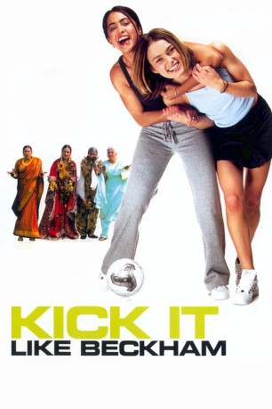

#2401 Kick It Like Beckham
Alternativ: Bend It Like Beckham
 
 IMDB-Wertung: 6.7 / 10
IMDB-Wertung: 6.7 / 10  Metascore: 66
Metascore: 66 
Die 18-jährige Jess Bhamra, ebenso hübsche wie selbstbewusste Tochter indischer Einwanderer, will englische Fußball-Nationalspielerin werden. Wie ihr großes Vorbild David Beckham von Manchester United. Ihre Mutter, eine traditionsbewusste Hausfrau, hat jedoch ganz andere Pläne mit ihrem jüngsten Spross. Bhamra Jr. soll Kochen lernen, Jura studieren und einen netten Inder heiraten. Leicht gesagt. Denn neben der Liebe zum Ball ist da noch der junge Trainer Joe, der nicht nur von Jess' spielerischem Talent angetan ist...
Jahr: 2002
Dauer: 112 Minuten
FSK: 6
Land: England Studio: Highlight FilmTonspuren: DD5.1 - ,
Untertitel:
Auflösung: 1080p (1920x1080) Größe: 7608 MB
Genre: Komödie, Drama, Liebe, Sport
Regisseur: Gurinder Chadha
Drehbuch: Gurinder Chadha, Guljit Bindra, Paul Mayeda Berges
Soundtrack: Craig Pruess
Darsteller:
- Parminder Nagra als Jesminder 'Jess' Kaur Bhamra
 Keira Knightley als Juliette 'Jules' Paxton
Keira Knightley als Juliette 'Jules' Paxton Jonathan Rhys Meyers als Joe
Jonathan Rhys Meyers als Joe Anupam Kher als Mr. Bhamra
Anupam Kher als Mr. Bhamra Archie Panjabi als Pinky Bhamra
Archie Panjabi als Pinky Bhamra Frank Harper als Alan Paxton
Frank Harper als Alan Paxton Juliet Stevenson als Paula Paxton
Juliet Stevenson als Paula Paxton- Pooja Shah als Meena
- Preeya Kalidas als Monica
- Trey Farley als Taz
- Shobu Kapoor als Polly
- Ace Bhatti als Nairobi Grandson
- Tanveer Ghani als Video Man
 Nina Wadia als Wedding Guest
Nina Wadia als Wedding Guest- Gary Lineker als Himself
- Alan Hansen als Himself
- John Barnes als Himself
- John Motson als Himself
- Gurinder Chadha als Woman in Park / Wedding Guest , uncredited
- Brandi Chastain als Herself , archive footage, uncredited
- Amerjit Deu als Uncle Raj , uncredited
- Ryan Giggs als Himself , archive footage, uncredited
- Mia Hamm als Herself , archive footage, uncredited
- Kristine Lilly als Herself , archive footage, uncredited
- Tiffeny Milbrett als Herself , archive footage, uncredited
- Paul Scholes als Himself , archive footage, uncredited
- Shaznay Lewis als Mel
- Shaheen Khan als Mrs. Bhamra
- Ameet Chana als Tony
- Paven Virk als Bubbly
- Saraj Chaudhry als Sonny
- Imran Ali als Gary
- Kulvinder Ghir als Teetu
- Harvey Virdi als Teetu's Mum
- Ash Varrez als Teetu's Dad
- Adlyn Ross als Elderly Aunt
- Zohra Segal als Biji
- Jenni Birch als Hounslow Harrier
- Olivia Schofield als Hounslow Harrier
- Natasha Lee als Hounslow Harrier
- Louise Walker als Hounslow Harrier
- Danielle Richards als Hounslow Harrier
- Suzanna Keeka als Hounslow Harrier
- Tanya Beverly als Hounslow Harrier
- Sally Kirkbride als Hounslow Harrier
- Maki Okumurakami als Hounslow Harrier
- Nav Bopari als Hounslow Harrier
- Simon Clifford als Cup Final Referee , uncredited
- Ray Donn als Man at Airport , uncredited
- Andy Harmer als David Beckham , uncredited
Datei: X:\2002\Kick It Like Beckham (2002, FSK6, 1920x1080).mkv seit 05.11.2015
Festplatte: HD 1996-2002
 Es gibt insgesamt 93 Filme in der Gruppe '2002'
Es gibt insgesamt 93 Filme in der Gruppe '2002'